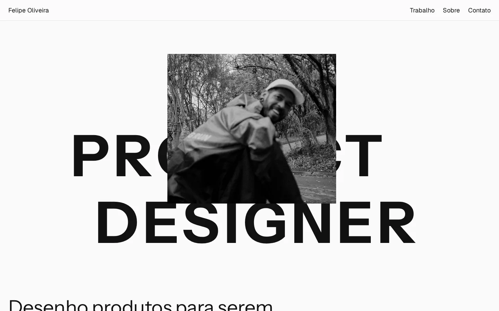
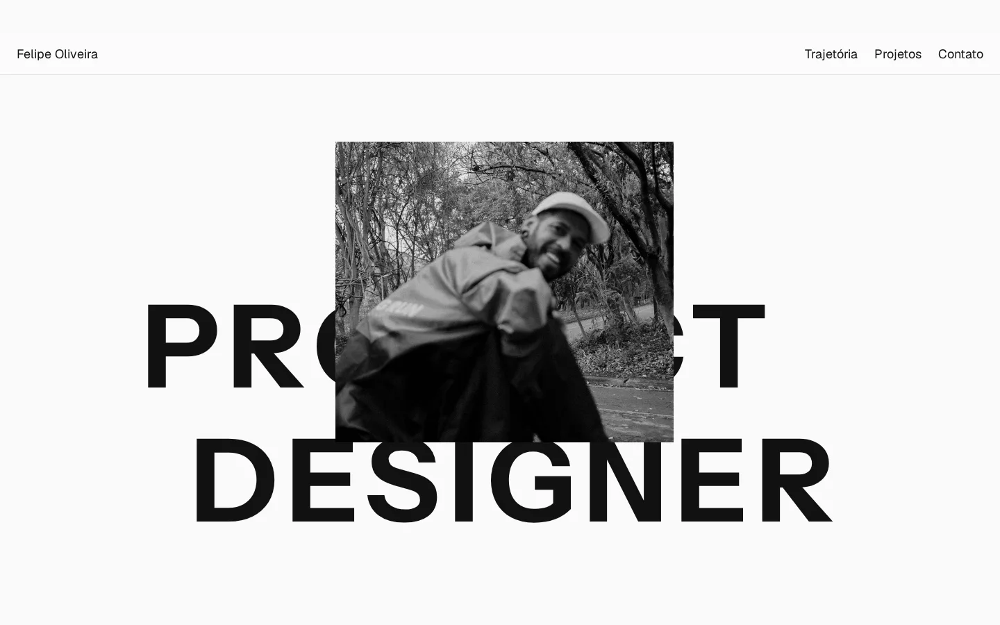
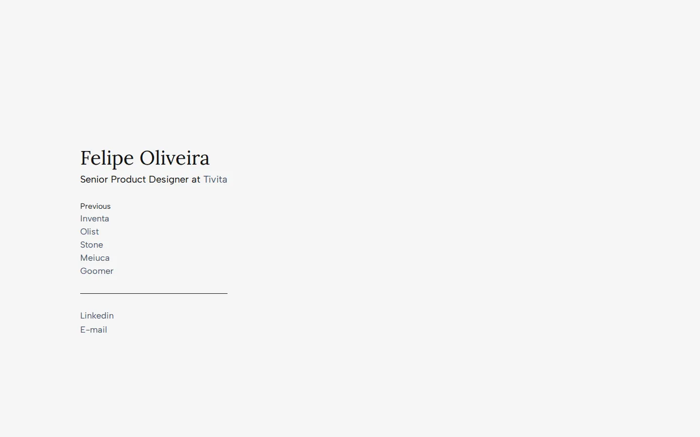
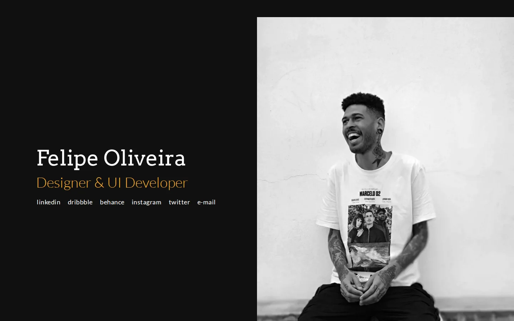
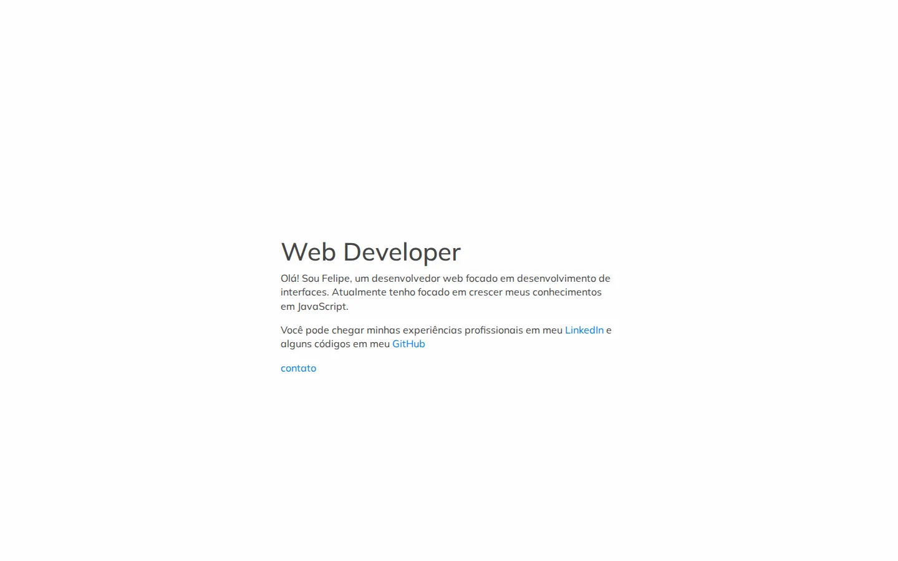

Arquivo
Versões
Este portfólio existe desde 2018. Cada versão continua no ar, do jeito que era, com o código original do repositório.
-
2026.2
Atual13 out 2026
Product Designer, com resultados à frente
Os cases da Inventa e da Olist ganharam páginas próprias com os números em destaque, o Sobre ficou mais amplo e o portfólio passou a guardar todas as versões anteriores.
HTML, Tailwind CSS 3, Geist e Instrument Sans

-
2026.1
16 set a 5 out 2026 · 15 commits
Product Designer sênior
Reescrita do zero: editorial em preto e branco, trajetória completa e projetos independentes com páginas de case.
HTML, Tailwind CSS 3, Geist e Instrument Sans

-
2025
12 a 31 mar 2025 · 4 commits
Senior Product Designer at Tivita
Um cartão de visitas: cargo atual, empresas anteriores e contato, em inglês.
HTML, Bootstrap 4, Lora e Albert Sans

-
2019
10 jan a 30 set 2019 · 8 commits
Designer & UI Developer
A primeira versão como designer: fundo escuro, foto em preto e branco e links para as redes.
HTML, Bootstrap 4, Arvo e Lato

-
2018
1 fev a 18 abr 2018 · 17 commits
Web Developer
Onde tudo começou: um parágrafo de apresentação de quem ainda era desenvolvedor front-end.
HTML5 Boilerplate, Bootstrap, jQuery e Muli
